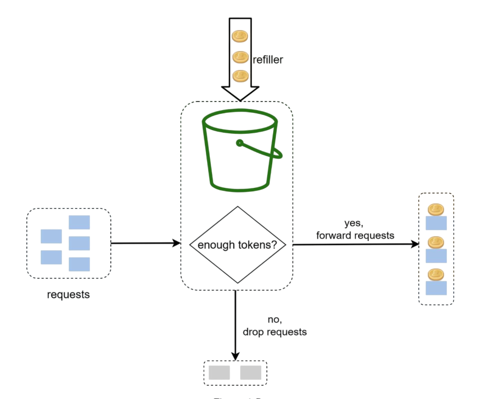
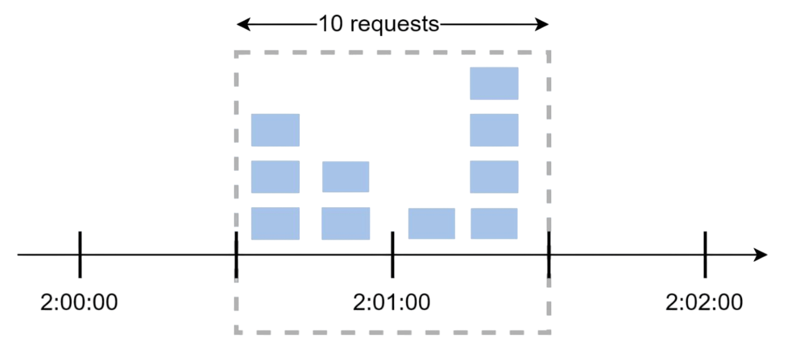
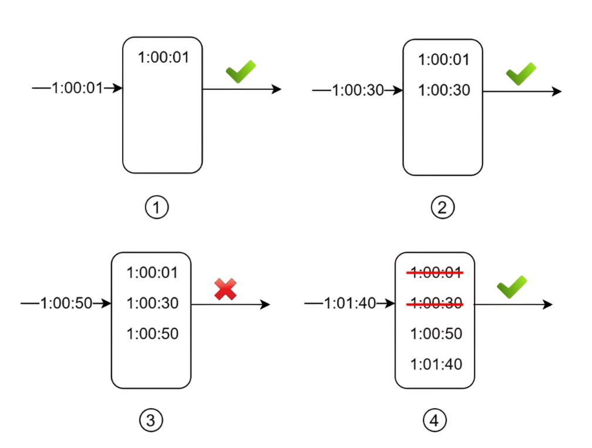
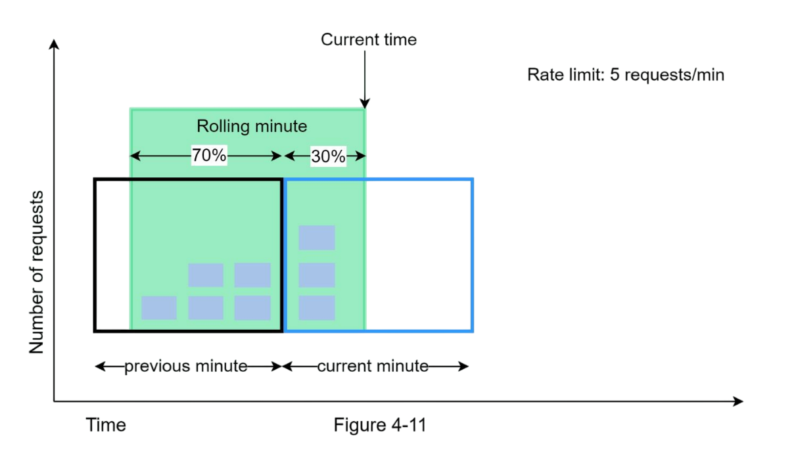

Rate Limiting Algorithms Explained
Hey there! So today I want to talk about something that's super important in system design but often gets overlooked until you're dealing with a massive traffic spike - rate limiting algorithms. Trust me, understanding these can save your backend from turning into a pile of burning servers!
When I first started learning about system design, rate limiting seemed like this mysterious black box. But once I dug deeper, I realized it's actually quite elegant. We'll explore five different algorithms, each with its own personality and use cases.
What Are We Covering?
We'll dive into these five rate limiting algorithms from a high level:
- Token bucket
- Leaking bucket
- Fixed window counter
- Sliding window log
- Sliding window counter
Don't worry if these sound intimidating - by the end of this post, you'll understand when and why to use each one!
1. Token Bucket Algorithm
This is probably the most popular rate limiting algorithm out there. Companies like Amazon and Stripe use this approach, and for good reason - it's simple, well-understood, and handles traffic bursts gracefully.
How Does It Work?
Imagine you have a bucket that can hold a certain number of tokens. Here's the process:
- Tokens are added to the bucket at a steady rate (like bucket is refilled after every minute)
- When the bucket is full, extra tokens just overflow and are lost
- Each request needs one token to proceed
- If there's a token available, the request goes through and consumes the token
- If no tokens are available, the request gets rejected

Here is how we'll implement this in code:
- Check if window time has been elapsed since the last time counter was reset. For rate 100 req/min, current time 10:00:27, last reset time 9:59:00 is elapsed and 9:59:25 (10:00:27-9:59:25 > 60 sec) is not elapsed.
- If window time is not elapsed, check if the user has sufficient requests left to handle the incoming request.
- If window is not elapsed then check if there are sufficient number of tokens(requests) left.
- If there are sufficient tokens, decrement the token count and allow the request.
- If there are no tokens left, reject the request.
// Simple token bucket implementation concept
async tokenBucket(ip: string): Promise {
const currentTime = Date.now();
const key = `token:${ip}`;
try {
// Get the current token count and last refill time
const [tokenCount, lastRefill] = await this.redisClient.hmGet(key, [
"tokenCount",
"lastRefill",
]);
const currentTokenCount = tokenCount
? parseInt(tokenCount)
: this.maxRequests;
const lastRefillTime = lastRefill ? parseInt(lastRefill) : 0;
const elapsed = currentTime - lastRefillTime;
// Calculate if we need to refill tokens based on elapsed time
if (elapsed >= this.windowMs) {
const newTokenCount = this.maxRequests - 1; // Refill tokens using one for the current request
await this.redisClient.hSet(key, {
tokenCount: newTokenCount.toString(),
lastRefill: currentTime.toString(),
});
return true; // Request allowed after refill
}
if (currentTokenCount <= 0) {
console.log(`Rate limit exceeded for IP: ${ip}`);
return false; // Rate limit exceeded
}
// Decrement token count for the current request
await this.redisClient.hSet(key, {
tokenCount: (currentTokenCount - 1).toString(),
lastRefill: lastRefillTime.toString(),
});
// Set expiration for cleanup
await this.redisClient.expire(key, Math.ceil(this.windowMs / 1000) + 60);
return true; // Request allowed
} catch (err) {
console.error("Error accessing Redis:", err);
return false; // Fail closed - deny request on Redis error
}
}
Parameters You Need
- bucket size (this.maxRequests): maximum number of tokens the bucket can hold
- refill rate (this.windowMs): after how many milliseconds the bucket refills
How Many Buckets Do You Need?
This depends on your requirements:
- Different API endpoints might need separate buckets (1 post/sec, 150 friends/day, 5 likes/sec)
- If you're limiting by IP address, each IP gets its own bucket
- For global limits (like 10k requests/sec total), use one shared bucket
Pros and Cons
Pros:
- Super easy to implement
- Memory efficient
Cons:
- Tuning the bucket size and refill rate can be tricky
- Allows traffic bursts (not good for handling sudden spikes)
2. Leaking Bucket Algorithm
This one's similar to token bucket but with a key difference - requests are processed at a fixed, steady rate. Think of it like a FIFO queue with a controlled output rate.
How It Works
- Incoming requests go into a queue (the "bucket")
- If the queue is full, new requests get dropped
- Requests are processed from the queue at regular intervals
// Leaking bucket concept
async leakyBucket(ip: string): Promise {
const currentTime = Date.now();
const key = `leaky:${ip}`;
try {
// Get the last request time and bucket level
const [lastRequest, bucketLevel] = await this.redisClient.hmGet(key, [
"lastRequest",
"bucketLevel",
]);
const lastRequestTime = lastRequest ? parseInt(lastRequest) : 0;
const currentBucketLevel = bucketLevel ? parseInt(bucketLevel) : 0;
/**
* Leaky bucket calculations you should consider:
*
* Leak Rate: How much time for each request to leak out of the bucket.
* Leak Rate = Time of each window / maximum allowed requests
* Example: If window is 10 seconds and max requests is 5, then leak rate is 2 seconds per request.
* This means every 2 seconds, one request can leak out of the bucket.
*
* Leak amount: How many requests can leak out based on the elapsed time since the last request.
* leakedAmount = elapsed / leakRate;
*/
const elapsed = currentTime - lastRequestTime;
const leakedAmount = Math.floor(
elapsed / (this.windowMs / this.maxRequests)
);
const newBucketLevel = Math.max(0, currentBucketLevel - leakedAmount);
// Check if we can allow the request
if (newBucketLevel >= this.maxRequests) {
console.log(`Rate limit exceeded for IP: ${ip}`);
return false; // Rate limit exceeded
}
// Update the bucket level and last request time
await this.redisClient.hSet(key, {
lastRequest: currentTime.toString(),
bucketLevel: (newBucketLevel + 1).toString(),
});
// Set expiration for cleanup
await this.redisClient.expire(key, Math.ceil(this.windowMs / 1000) + 60);
return true; // Request allowed
} catch (err) {
console.error("Error accessing Redis:", err);
return false; // Fail closed - deny request on Redis error
}
}
Parameters
- Bucket size (this.maxRequests): the queue size (how many requests can wait)
- Leak rate: how many requests are processed per second
Pros and Cons
Pros:
- Memory efficient with fixed queue size
- Provides stable output rate (great for downstream systems)
Cons:
- Can't handle bursts well - everything gets smoothed out
- Newer requests might wait behind older ones
3. Fixed Window Counter Algorithm
This is probably the simplest algorithm to understand and implement. Time is divided into fixed windows, and each window has a request counter.
How It Works
- Divide time into fixed intervals (like 1-minute windows)
- Each window allows a fixed number of requests
- Keep a counter for each window
- When counter reaches the limit, reject new requests for that window

// Fixed window counter
async fixedWindow(ip: string): Promise {
const currentTime = Date.now();
// Calculate window start time for fixed window algorithm
const windowStart = Math.floor(currentTime / this.windowMs) * this.windowMs;
const key = `${ip}:${windowStart}`;
try {
const reqCount = await this.redisClient.GET(key);
// Initialize new window with first request
if (reqCount === null) {
await this.redisClient.SET(key, 1, {
expiration: { type: "EX", value: this.windowMs },
});
}
// Check if rate limit exceeded
if (reqCount && parseInt(reqCount) >= this.maxRequests) {
console.log(`Rate limit exceeded for IP: ${ip}`);
return false; // Rate limit exceeded
}
// Increment request count for this window
await this.redisClient.INCR(key);
return true; // Request allowed
} catch (err) {
console.error("Error accessing Redis:", err);
return false; // Fail closed - deny request on Redis error
}
} The Edge Problem
Here's where things get tricky. Let's say you allow 5 requests per minute. What happens if someone sends 5 requests at 2:00:30 and another 5 requests at 2:01:30? That's 10 requests in just 1 minute, even though each individual window stayed within limits!
This "edge effect" is the main weakness of fixed windows - traffic bursts at window boundaries can bypass your limits.
4. Sliding Window Log Algorithm
This algorithm fixes the edge problem from fixed windows by keeping track of individual request timestamps.
How It Works
- Keep a log of all request timestamps
- When a new request comes in, remove all timestamps older than the window
- Add the new request's timestamp to the log
- If log size is within limits, allow the request; otherwise, reject it

// Sliding window log
async slidingLogs(ip: string): Promise {
const currentTime = Date.now();
const key = `sliding:${ip}`;
try {
// Remove old timestamps outside the sliding window
await this.redisClient.zRemRangeByScore(
key,
0,
currentTime - this.windowMs
);
// Get current count of requests in the sliding window
const requestCount = await this.redisClient.zCard(key);
// Add current request timestamp to sorted set
await this.redisClient.zAdd(key, {
score: currentTime,
value: currentTime.toString(),
});
// Check if rate limit would be exceeded
if (requestCount >= this.maxRequests) {
console.log(`Rate limit exceeded for IP: ${ip}`);
return false; // Rate limit exceeded
}
// Set expiration for cleanup - key expires after window + buffer time
await this.redisClient.expire(key, Math.ceil(this.windowMs / 1000) + 60);
return true; // Request allowed
} catch (err) {
console.error("Error accessing Redis:", err);
return false; // Fail closed - deny request on Redis error
}
}
Notice something important: even if a request gets rejected, its timestamp might still be logged for future calculations.
Pros and Cons
Pros:
- Very accurate - no edge effects
- Works perfectly for any rolling time window
Cons:
- Memory hungry - stores every request timestamp
- Can be expensive to maintain for high-traffic systems
5. Sliding Window Counter Algorithm
This is the hybrid approach - combining the memory efficiency of fixed windows with the accuracy of sliding windows. It's a clever compromise!
How It Works
We use this formula:
Requests in current window + (requests in previous window × overlap percentage)
For example, if we're 70% through the current window:
3 (current) + 5 (previous) × 0.7 = 6.5 requests
If the maximum allowed requests is 10, we can allow a new coming request (because only 6.5 requests are passed till now as per our calculations). If maximum allowed requests was 6, we would reject any new request.

// Sliding window counter
class SlidingWindowCounter {
constructor(windowSize, maxRequests) {
this.windowSize = windowSize * 1000; // convert to ms
this.maxRequests = maxRequests;
this.windows = new Map();
}
allowRequest() {
const now = Date.now();
const currentWindow = Math.floor(now / this.windowSize);
const previousWindow = currentWindow - 1;
// calculate overlap percentage
const windowProgress = (now % this.windowSize) / this.windowSize;
const currentCount = this.windows.get(currentWindow) || 0;
const previousCount = this.windows.get(previousWindow) || 0;
// estimated requests in sliding window
const estimatedCount = currentCount + (previousCount * (1 - windowProgress));
if (estimatedCount < this.maxRequests) {
this.windows.set(currentWindow, currentCount + 1);
return true; // request allowed
}
return false; // request rejected
}
}Pros and Cons
Pros:
- Smooths out traffic spikes
- Memory efficient
- Good approximation of true sliding window
Cons:
- Not 100% accurate (assumes even distribution)
- Might not work for super strict requirements
But here's the thing - according to Cloudflare's experiments with 400 million requests, only 0.003% of requests were incorrectly handled. That's pretty darn good!
Which Algorithm Should You Choose?
Here's my personal take on when to use each:
- Token bucket: when you need to allow bursts but want overall rate control (most API rate limiting)
- Leaking bucket: when you need steady, predictable output (message queues, batch processing)
- Fixed window: when simplicity matters more than perfect accuracy (internal services)
- Sliding window log: when you need perfect accuracy and can handle the memory cost (financial systems)
- Sliding window counter: when you want good accuracy with reasonable memory usage (most production systems)
Wrapping Up
Rate limiting isn't just about protecting your servers - it's about creating a fair and predictable experience for all your users. Each algorithm has its sweet spot, and understanding these trade-offs will help you make better architectural decisions.
I hope this breakdown was helpful! Next time you're designing a system and someone asks "how do we handle rate limiting?", you'll have a whole toolkit of solutions to choose from.
Github Link: https://github.com/Harsh2509/rate-limiter
Happy coding! 🚀
- Harsh Chauhan